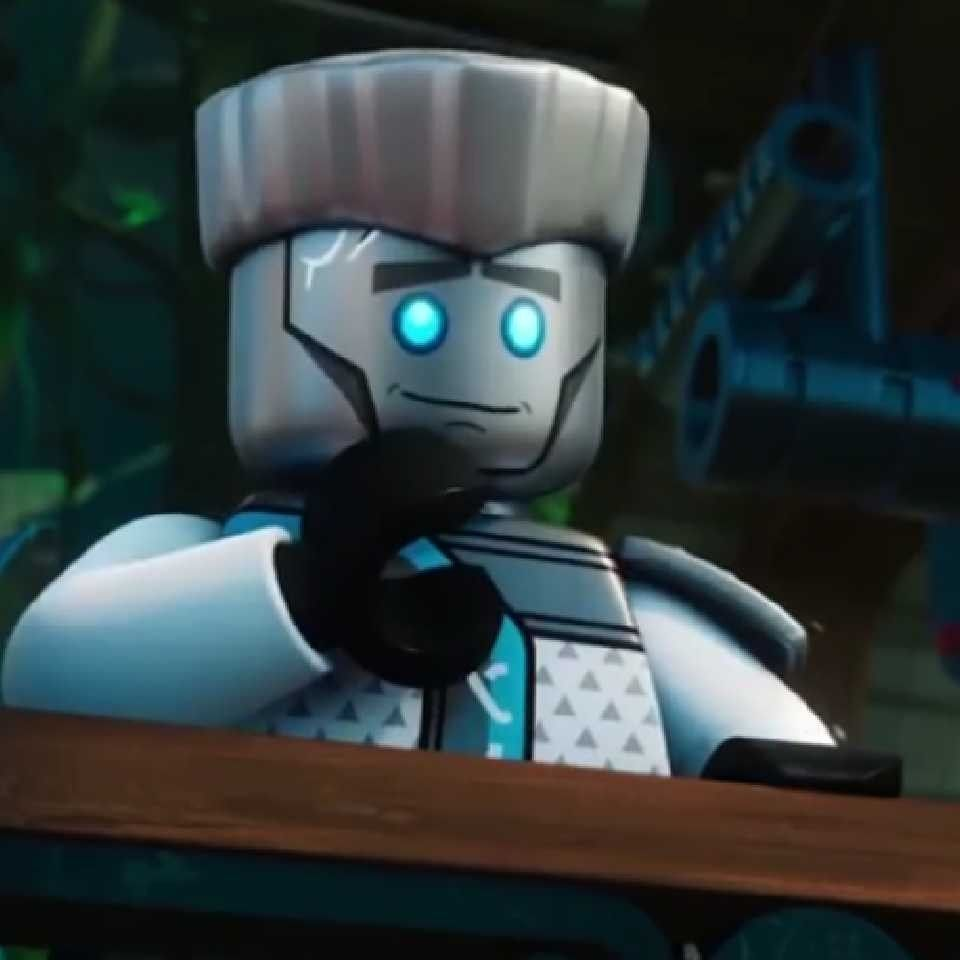

My fav songs are usually by Why Don't We. I'm also currently into KDA. I'm not much of a K-pop fan, but KDA makes an exception. I also enjoy listening to "La da dee" by Cody Simpson. I have too many songs that I like, so I'll leave that at that.
I really really like Evelynn from KDA. I'm also really into Lego Ninjago, as you'll soon find out. My fav charactor from LN is probably Zane Julien. He's a nindroid. I'm also quite fond of Elavenil Valarivan, who is an Tamil gun shooter. Yup, I love weapons. My main idols in life though, are my family and friends. Without them, I wouldn't be where I am right now (even though I have absolutley no idea where I am).
Okay, so. I am a REALLY big fan of Lego Ninjago. I adore Zane Julien, who is a robot/nindroid and his partner Pixal. I. LOVE. THEM. I also really like Jay Walker, but I like the old Jay better because the new Jay is just a little bit...er...not smart?? I used to be really fond of Kai Smith, because I liked his hair. But now he's my somewhat ok character favourite. My bestie really likes Cole Brookstone, and I do too. You know, Cole is the most underrated charcater in LN. Cole and Kai are really underrated. But you know who's overrated? Lloyd Montgomery Garmadon, that's who. Just because he's the Green Ninja, doesn't mean he needs to get 80% of the seasons to himself. The most un-used character would be Nya. She's only got two seasons to herself, so far. And even though she's a ninja, you can barely see her do anything. I guess Zane is under-used too. The Rebooted season was the SADDEST season EVER. Rebooted and Uncharted. Those two seasons are plain sad, because Zane gives up half his heart to save the girl he loves, and then dies for her in Rebooted (but then is rebuilt, because did I mention he is a robot??). Nya dies in Uncharted, because she gave up her life in order to save Jay (her husband) and makes Jay cry. A lot. I also cried when I watched those seasons. But the Prime Empire season was just funny. It's almost a joke. Heh.
I was gonna make a section about this, but I got bored of making sections and using my fingers to type continuosly, so no thanks!
I have many inspirations. My main insprirer is my father. The reasons will remain unknown. My other inspirers are the ninja! Zane taught me that no matter what you're made of, you'll always be accepted and loved. Nya taught me not to underestimate people. Jay taught me that positivity will always give you hope. Kai taught me that siblings are precious treasures you should always keep by you (cause Nya is his sister). Cole taught me that even if you're seperated from the people you care about, you should stay strong. Pixal taught me that everyone has a choice. And Lloyd taught me that family might be complicated, but you should always love them. Sheesh, that was emotional.
